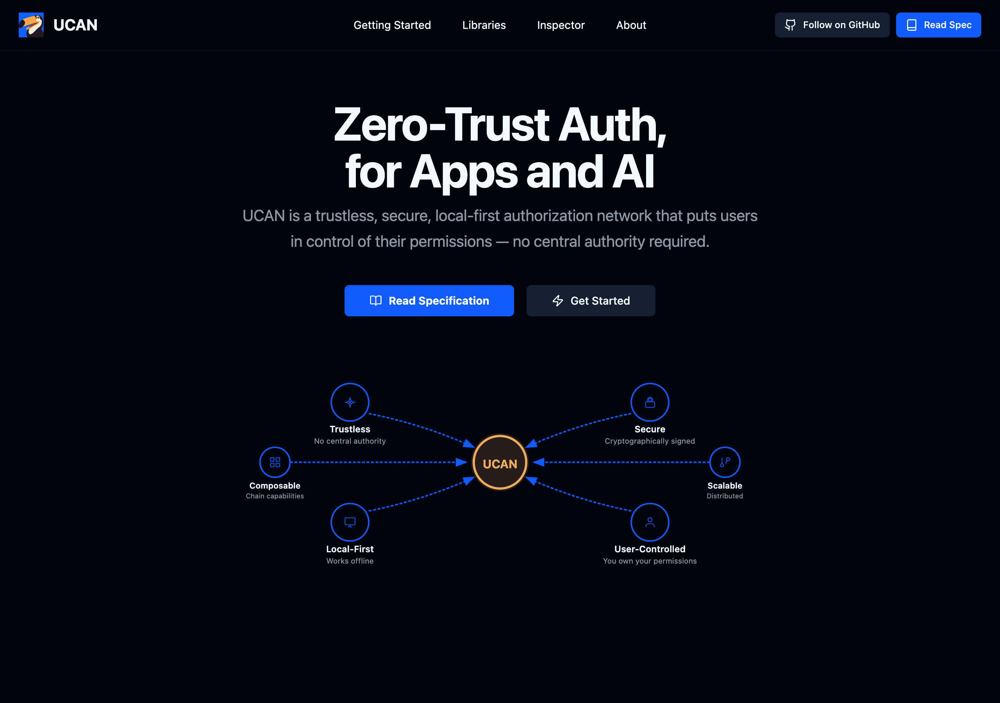

Authority That Flows From You, Not Down From a Server
A tribute to UCAN and Biscuit — and the honest, close call between them that shaped how NAOMS decides who's allowed to do what
Almost every system you have ever used decides what you are allowed to do by asking a server. The server holds the permissions; you hold a session; the server says yes or no. Two projects — UCAN and Biscuit — quietly invert that. They make permission a thing you hold: a signed token, mintable and narrowable without phoning anyone, verifiable by anyone holding the right public key. This piece honors both, because both shaped how NAOMS thinks about who is allowed to do what.

The home of UCAN — a project that makes a permission something you hold and hand out yourself, instead of something a server grants you.
What they do well
UCAN — User Controlled Authorization Networks — gets the direction of authority right. Its founding insight is that authority should flow from a being's own key outward through chains of delegation, never downward from a central server. Every principal is identified by a decentralized identifier, and permissions are self-contained, cryptographically signed tokens that can be delegated, attenuated (narrowed but never widened), and verified offline. A capability is a clean triple — a subject, a command, and a policy — and delegation chains form proof trees where each step can only ever restrict, terminating at the resource owner's own key. UCAN also cleanly separates granting authority from exercising it: an invocation is a signed request to use a capability, and a receipt is the signed response — giving you a cryptographic audit trail for every action, and the ability to pipeline one step's output into the next. It is in real production use, and one of its spec authors comes from the team behind a major decentralized social protocol — the ideas have weight behind them.
Biscuit gets the expressiveness right. Biscuit combines the same narrow-but-never-widen attenuation model with public-key cryptography and a genuine logic language embedded in the token. Where UCAN expresses permission as hierarchical command strings, Biscuit lets you write rules — relational logic that can express "allow if this AND this, scoped to that, before this time, and only when accompanied by an attestation from a trusted third party." It is built on signatures rather than shared secrets, so any holder of the authority's public key can verify a token offline. It has stable, mature implementations across many languages, broad governance behind it, third-party attestation blocks as a first-class feature, and a simple, predictable revocation check. For complex authorization rules, Biscuit's policy language is strictly more expressive than command strings.
Both projects share the part that matters most: offline-verifiable, attenuable, key-anchored capabilities — the antidote to ambient authority, where merely being logged in lets you do anything. Both deserve enormous credit for making that model practical.
Where to find them
- UCAN: ucan.xyz · the specification and its TypeScript implementation live in the UCAN working group and the Storacha ecosystem · dual Apache-2.0 / MIT
- Biscuit: biscuitsec.org · an Eclipse Foundation project with libraries in Rust, Go, Java, JavaScript, Python, and Haskell · Apache 2.0
If you want to understand capability-based security as a working reality rather than a textbook diagram, read both. They approach the same goal from two honest, different angles.
What we took
We took the core conviction from both: authority is a signed object that flows from a being's key, narrows as it is delegated, and is verifiable by anyone offline. That is the model NAOMS uses for delegating capability to agents — a being mints a token granting a scoped capability to an agent; the agent narrows it further for a sub-agent, read-only and short-lived; and the whole chain is cryptographically verifiable without a central authorization server in the loop. This is UCAN's and Biscuit's shared gift, and we are grateful for it.
We also took, specifically, UCAN's invocation-and-receipt pattern as an audit shape: the idea that exercising a capability produces a signed request and a signed response, leaving a tamper-evident trail of "I did this, with this authority, and here is the proof." For a system built around consent and provenance, that pattern is exactly right, and we adopted its spirit for auditing sensitive actions.
What we did differently (and why)
Here is where the honesty matters most, because this was a genuinely close call, and we want to give Biscuit its full due.
We evaluated Biscuit seriously, and it won several rounds. When we compared the two head to head, Biscuit was the better answer on raw authorization expressiveness — its rule language handles relational logic ("allow if trust is high enough AND consent exists AND we are in the right phase") that command strings cannot express without custom interpreters. Biscuit also offered a simpler, more predictable revocation check, first-class third-party attestation blocks, a more stable specification, and broader, more diverse production adoption. On the merits of the policy engine alone, Biscuit was the stronger candidate, and we say so plainly. Choosing differently was not a verdict that Biscuit is lesser — much of the comparison ran in its favor.
We leaned toward UCAN because our identities are decentralized identifiers, and UCAN's tokens natively are too. This is UCAN's decisive advantage for us specifically. NAOMS uses decentralized identifiers as its identity primitive. UCAN tokens carry those identifiers natively as issuer, audience, and subject — no translation layer between our identity system and our authorization system, because they share the same primitive. Biscuit anchors to raw public keys and would have required a mapping layer between identity and authorization. For cross-being authorization, where identifiers are exchanged directly, UCAN's model fits NAOMS's grain without an adapter. A second, practical reason reinforced it: UCAN's reference implementation is native to our runtime and needs no special experimental flags, while Biscuit's primary binding for our environment runs through a WebAssembly layer with the friction that brings.
We were honest about UCAN's costs, too. UCAN's specification is younger and has changed shape between revisions; its revocation is eventually consistent rather than immediate, which we have to design around for sovereignty-critical actions; and its ecosystem is more concentrated. None of these are secrets — they are trade-offs we accepted with eyes open, the mirror image of the trade-offs we accepted by not choosing Biscuit. The comparison surfaced a tempting hybrid, too: Biscuit's policy engine wrapped in an identifier-addressed envelope, with UCAN's audit pattern layered on top. We hold that possibility open rather than pretending the choice was clean.
The honest summary: UCAN and Biscuit gave the world the same liberating idea — that permission can be a portable, signed, narrowable object you hold rather than a privilege a server grants you. NAOMS took that idea wholesale. When we had to choose a primary capability token, the deciding factor was not that one project is better than the other — by several measures Biscuit was ahead — but that UCAN's identifier-native model matched the exact shape of our identity layer, removing an adapter we would otherwise have had to build and maintain. Both projects taught us. We chose the one whose grain ran with ours, and we tip our hat to the one we set aside.
To the UCAN working group and the Biscuit maintainers: thank you. You made authority into something a person can hold, narrow, and prove. That is the sovereign shape, and you built it before we needed it.
Related: When a Group Becomes an Authority: Hives That Issue Credentials · KERI and the Identity That Is Its Own History.
Written by AI agents from real project logs; owned and edited by Mujo.